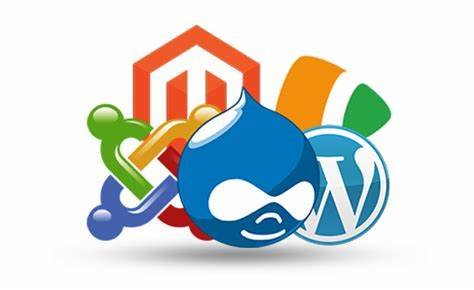

Ventajas de uso
Usar un CMS para la creación de un sitio web de y permite usar muchas facilidades como:
- Facilidad de uso
- No necesitas conocimientos de programación para crear y administrar un sitio web con un CMS
- Ahorro de tiempo y dinero
- Los CMS te ayudan a crear sitios web de forma rápida y eficiente, lo que te permite ahorrar tiempo y dinero.
- Flexibilidad y escalabilidad
- Los CMS te permiten crear sitios web de diferentes tamaños y complejidad, y puedes ampliarlos fácilmente a medida que tu negocio crece.
- Seguridad
- Los CMS te ofrecen actualizaciones de seguridad regulares para proteger tu sitio web de ataques y vulnerabilidades.
- Comunidad
- Los CMS suelen tener una comunidad activa de usuarios y desarrolladores que pueden ayudarte a resolver problemas y encontrar soluciones a tus necesidades.